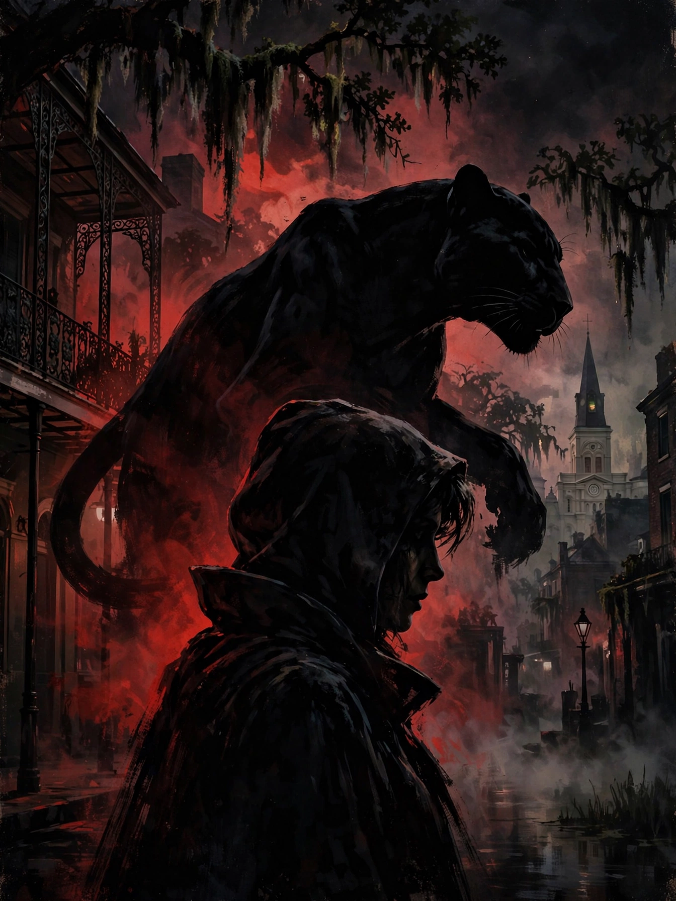

Cat PeopleCat People is a 1982 American erotic horror film directed by Paul Schrader, a remake of the 1942 film of the same name. It stars Nastassja Kinski, Malcolm McDowell and John Heard, with a score by Giorgio Moroder and the theme song "Cat People (Putting Out Fire)" performed by David Bowie.
Irena Gallier travels to New Orleans to reunite with her brother Paul. The siblings descend from a people who transform into black panthers when they have sex with humans, and can only revert by killing. Paul urges incest as the only safe outlet; Irena resists, falling for zoo curator Oliver while her transformations threaten those around her.
Schrader reworked DeWitt Bodeen's original script into a more explicit, mythic treatment. Cinematography by John Bailey emphasised lush, stylised visuals; the transformation effects eschewed the original's shadowplay for direct imagery.
The film received mixed reviews but has gained a cult following. Bowie's theme song later appeared in other films, notably Inglourious Basterds (2009) and Atomic Blonde (2017).